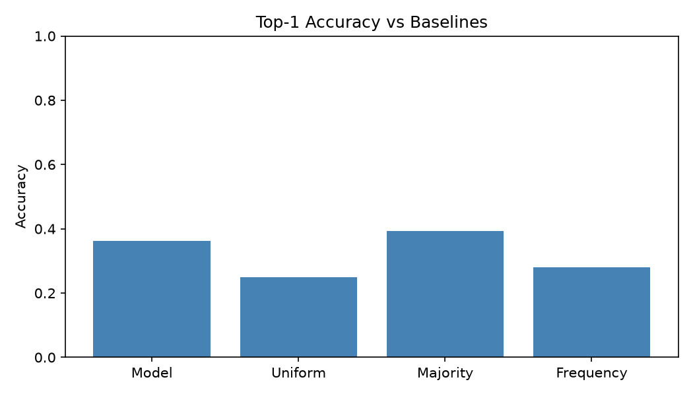
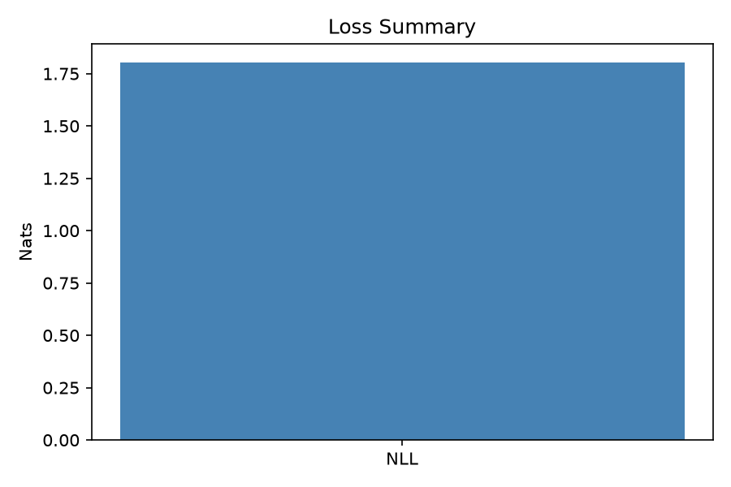
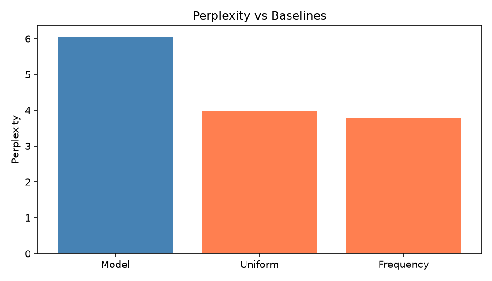
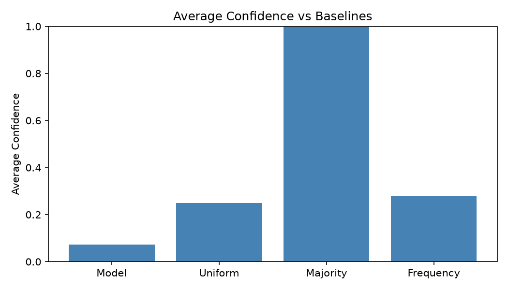
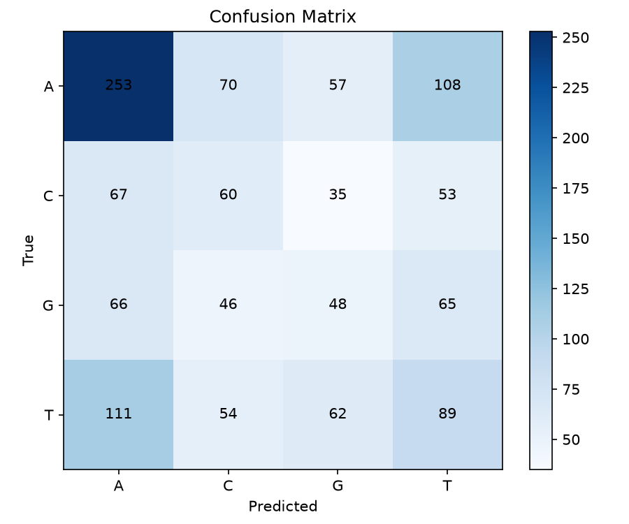
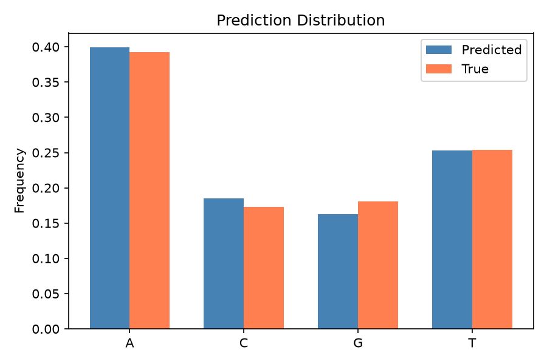

| Benchmark version | 1.0.0 |
|---|---|
| Timestamp | 2026-07-30T20:22:07.400992+00:00 |
| Block | 5000 |
| Model | multimolecule/dnabert2 |
| Model version | 1 |
| Model hash | 5390e2c434f23cb8a46d0d7b25caac1eab076620711c0e4dd9a4b8bcc6323d0b |
| Checkpoint | N/A |
| Genome | /Users/ruimendes/.rusty-xenom/grch38.xenom |
| Genome hash | 8c672fe39f388e7072011a7229738c32f34a158112ed4906fbe7fef021fb287f |
| Seed | 42 |
| Samples | 16 |
| Sequence length | 512 |
| Mask probability | 0.1500 |
| gRPC address | 94.237.108.145:50051 |
| Vocab size | 4 |
| Logits available | No |
| Masked positions | 1244 |
| Metric | Value |
|---|---|
| Cross Entropy | 1.8023 |
| NLL | 1.8023 |
| Perplexity | 6.0637 |
| Top-1 Accuracy | 36.17% |
| Top-3 Accuracy | 78.72% |
| Top-5 Accuracy | 100.00% |
| Balanced Accuracy | 32.31% |
| Precision | 32.25% |
| Recall | 32.31% |
| Macro F1 | 0.3226 |
| Micro F1 | 0.3617 |
| Weighted F1 | 0.3604 |
| MCC | 0.1106 |
| Kappa | 0.1106 |
| Prediction Entropy | 1.3216 |
| Average Confidence | 0.0718 |
| Base | Count | Correct | Precision | Recall | F1 | Accuracy |
|---|---|---|---|---|---|---|
| A | 488 | 253 | 0.5091 | 0.5184 | 0.5137 | 0.5184 |
| C | 215 | 60 | 0.2609 | 0.2791 | 0.2697 | 0.2791 |
| G | 225 | 48 | 0.2376 | 0.2133 | 0.2248 | 0.2133 |
| T | 316 | 89 | 0.2825 | 0.2816 | 0.2821 | 0.2816 |
| Baseline | Accuracy | Top-3 | Top-5 | Macro F1 | Perplexity | Average Confidence |
|---|---|---|---|---|---|---|
| Uniform | 25.00% | 75.00% | 100.00% | 0.2429 | 4.0000 | 0.2500 |
| Majority | 39.23% | 100.00% | 100.00% | 0.1409 | inf | 1.0000 |
| Frequency | 28.10% | 82.72% | 100.00% | 0.2500 | 3.7730 | 0.2810 |
| A | C | G | T | |
|---|---|---|---|---|
| A | 253 | 70 | 57 | 108 |
| C | 67 | 60 | 35 | 53 |
| G | 66 | 46 | 48 | 65 |
| T | 111 | 54 | 62 | 89 |
| Region | N Masked | Top-1 | Balanced Acc | Macro F1 | Perplexity |
|---|---|---|---|---|---|
| at_rich | 543 | 44.75% | 29.24% | 0.2915 | 8.0967 |





